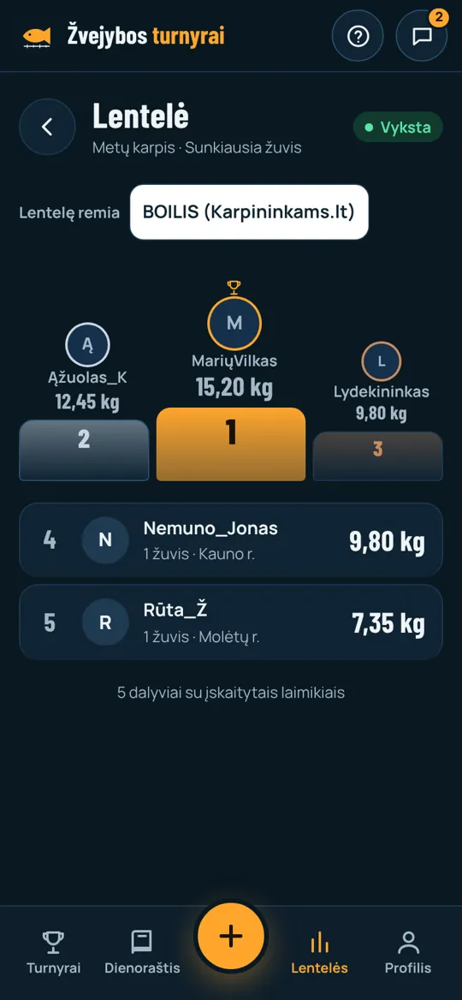

Sezono turnyras
Metų karpis
Pasiūlymas BOILIS (Karpininkams.lt)
Visą karpių sezoną žvejai varžosi dėl sunkiausio karpio. Žuvis pasveriama, nufotografuojama programėlės kamera ir paleidžiama. Lentelė atsinaujina gyvai, o BOILIS matomas visur, kur žvejai žiūri.

TrukmėKovas – rugsėjis
RūšisTik karpiai
NugalėtojasSunkiausias
DalyviamsNemokamai